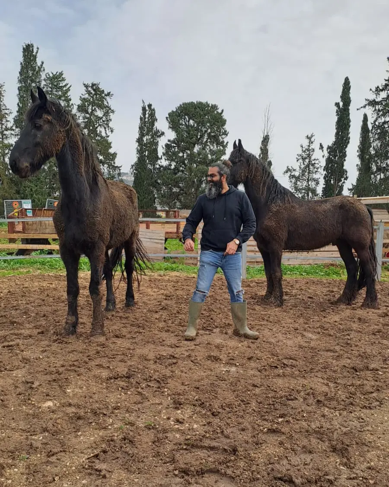
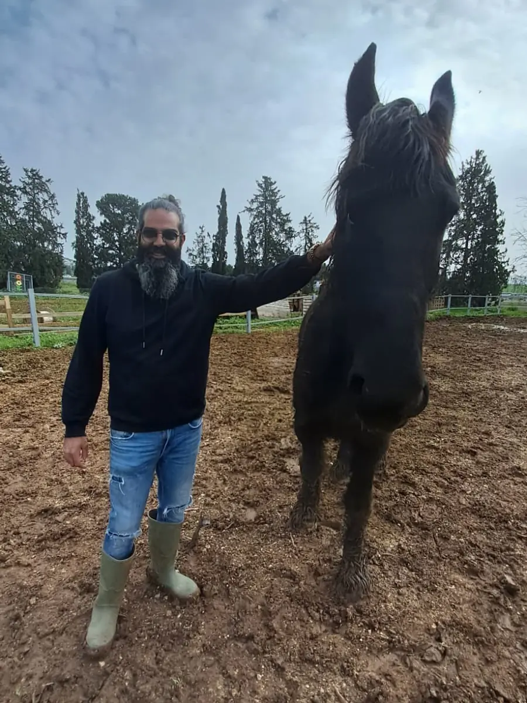
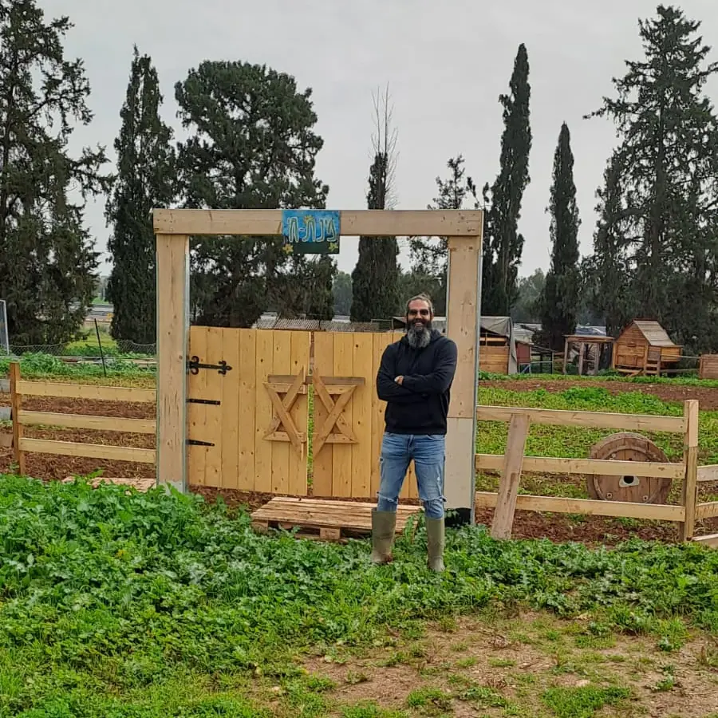

לוחמים ואנשי מילואים
בזמן השירות, בחזרה הביתה ובחודשים שאחרי.
טראומה ופוסט־טראומה
טיפול בטראומה ובפוסט־טראומה למבוגרים ולמתבגרים, וליווי של בני הזוג ובני המשפחה שלצדם. לא חייבים להתמודד עם זה לבד.

איך זה יכול להיראות
לפעמים היא רועשת, ולפעמים שקטה מאוד. כמה דברים שעשויים להופיע אחרי אירוע קשה:
שינה לא רגועה, סיוטים או עייפות שלא עוברת.
דריכות מתמדת, קפיצה מרעשים, קושי להירגע.
הימנעות ממקומות, מאנשים או משיחות שמזכירים את מה שקרה.
מחשבות או תמונות שחוזרות בלי שמזמינים אותן.
כעס, חוסר סבלנות או ריחוק מהאנשים הקרובים.
תחושה שמשהו השתנה — ושקשה להסביר את זה למי שלא היה שם.
זו לא רשימה לאבחון. אם משהו מכאן מוכר לכם, או למישהו קרוב אליכם — שווה לדבר.
למי הטיפול מיועד
בזמן השירות, בחזרה הביתה ובחודשים שאחרי.
אחרי פיגוע, תאונה, אובדן או אירוע שטלטל את החיים.
טראומה פוגשת את כל הבית. גם מי שלצד הנפגע זקוק למקום משלו.
גם צעירים חווים טראומה, ולפעמים מבטאים אותה אחרת.

הגישה שלי
העבודה עם אנשים, זוגות ומשפחות לימדה אותי עד כמה טראומה ומשברים משפיעים על הזוגיות, על ההורות ועל המשפחה כולה. לכן הטיפול יכול לכלול, לפי הצורך, גם מפגשים זוגיים או משפחתיים והדרכת הורים — לצד העבודה האישית.
חזרה ממילואים
אחרי תקופת שירות ארוכה, החזרה לשגרה, למשפחה ולעבודה יכולה להיות מורכבת יותר משנדמה. זה נכון למי שחזר, וזה נכון גם למי שחיכה בבית.
אני מלווה את התהליך הזה באופן אישי, זוגי ומשפחתי, וגם בהרצאות ובסדנאות שמסייעות לארגונים לקלוט מחדש את הלוחמים שחוזרים לעבודה.

שאלות שעולות הרבה
כן. לא צריך אבחנה כדי לפנות. נדבר, ונבין יחד מה קורה ומה יכול לעזור.
אפשר להתחיל מכם. שיחה עם בן או בת הזוג יכולה לעזור להבין מה קורה, איך לתמוך בלי להישחק, ואיך ומתי להציע עזרה.
כן. תגובות לטראומה יכולות להופיע או להתעורר גם חודשים ושנים אחרי האירוע, ואפשר לטפל בהן גם אז.
כן. מעבר לקליניקה במושב שדה יעקב, יש אפשרות למפגשים אונליין בהתאם לצורך.
במצוקה עכשיו? אם אתם או מישהו קרוב אליכם נמצאים במצוקה חריפה, אל תחכו. ער״ן: 1201 · נט״ל, קו סיוע לנפגעי טראומה: 1-800-363-363 · במצב חירום: מד״א 101
לצפייה ולהאזנה
יצירת קשר
כתבו לי בוואטסאפ, התקשרו, או השאירו פרטים — ואחזור אליכם.